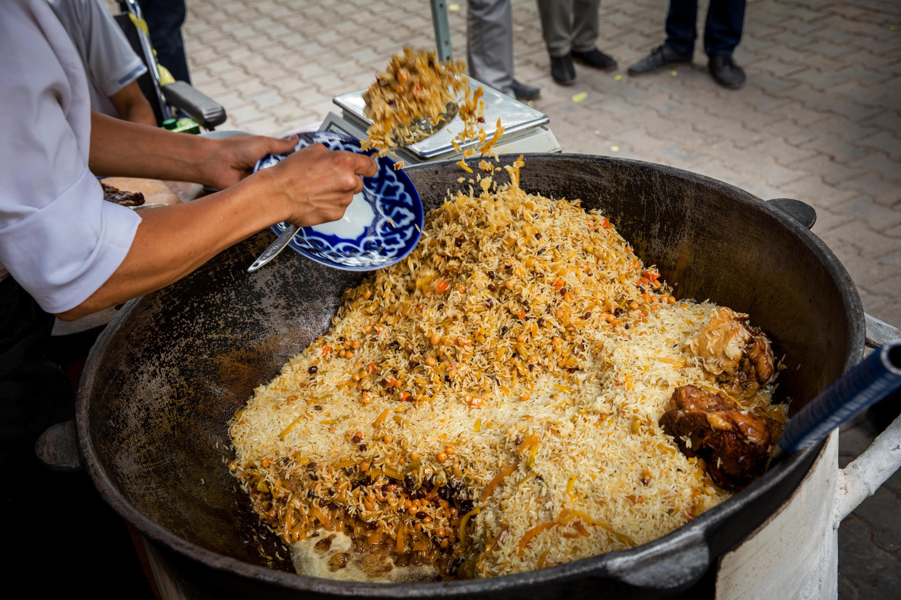

Plov
A rice-based dish prepared with ingredients such as meat, carrots, onions, and spices.
Explore PlovExplore traditional Uzbek cuisine
Uzbek cuisine has been influenced by the country's history, geography, agriculture, and connections with other cultures across Central Asia. Choose a food below to learn more.

A rice-based dish prepared with ingredients such as meat, carrots, onions, and spices.
Explore PlovBaked pastries commonly filled with meat, onions, and spices.
Explore SamsaA noodle dish commonly prepared with meat, vegetables, and a flavorful sauce or broth.
Explore LagmanSteamed dumplings traditionally filled with meat and other ingredients.
Explore Manti